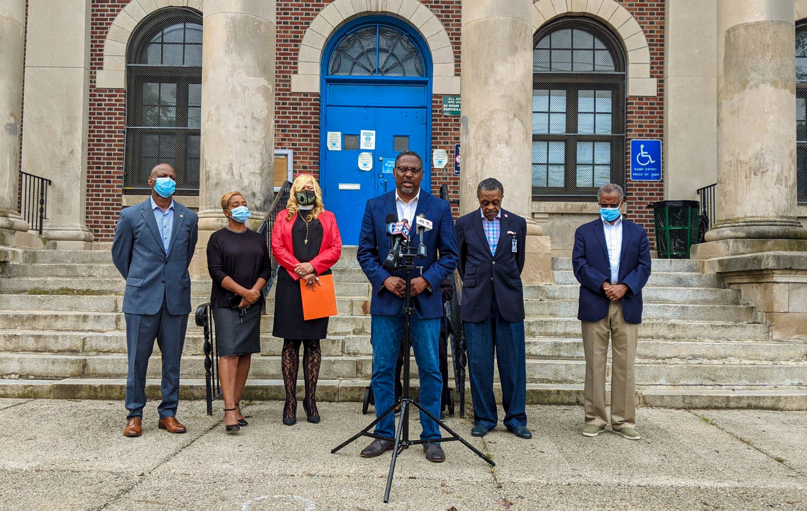

Philadelphia City Council
From June – December 2021, I served as Councilwoman Cindy Bass' Communications Manager. I oversaw a wide variety of day-to-day responsibilities such as speech writing, event photography, social media management, media relations and content creation.
At every event, I was responsible for photographing Councilwoman Bass and constituents. These photos were then sorted, edited and used for social media and marketing collateral.
The Councilwoman used Twitter as her primary social media platform, followed by Instagram and Facebook. During my time managing the accounts, engagement reached an all-time high.
Creating content was part of my day-to-day responsibilities and projects ranged from quarterly newsletters, marketing collateral, flyers, and more.
I worked with media in a number of capacities, including pitching stories, organizing press conferences, facilitating interviews and generating background for reporters.
Overall, my time with Councilwoman Bass resulted in a 102% increase in organic social media mentions, monthly social media impressions reached an all-time high, with 41 secured media mentions in local & national publications.